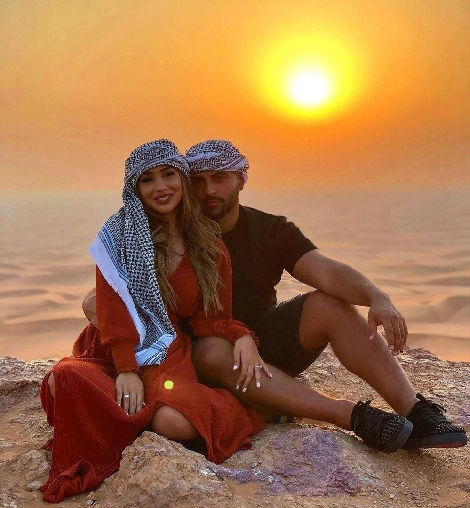
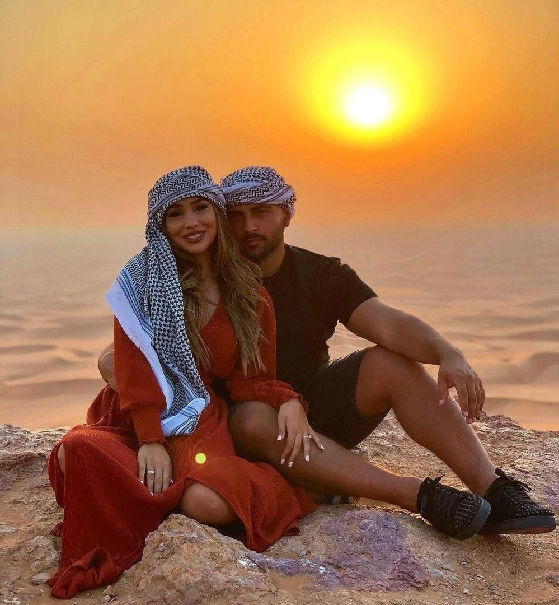
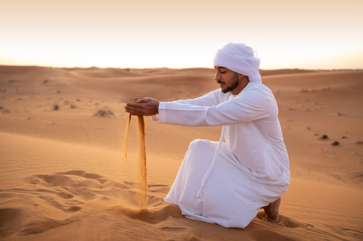
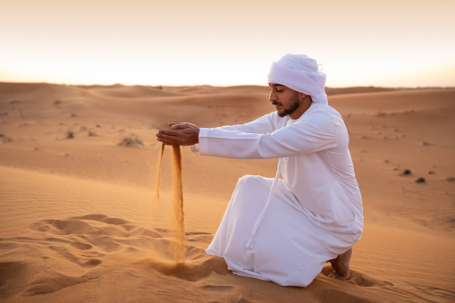
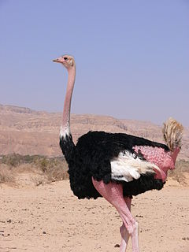
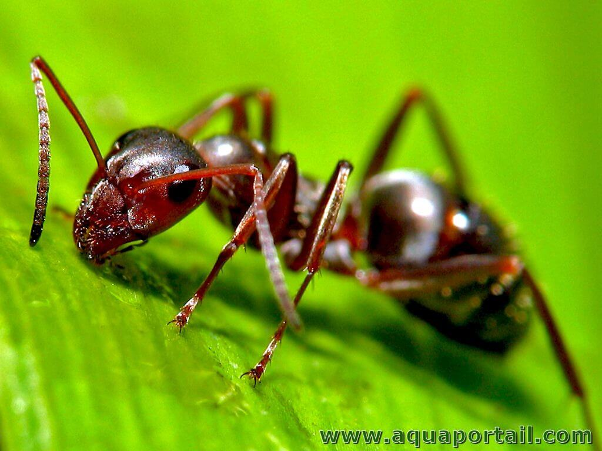
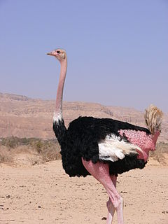
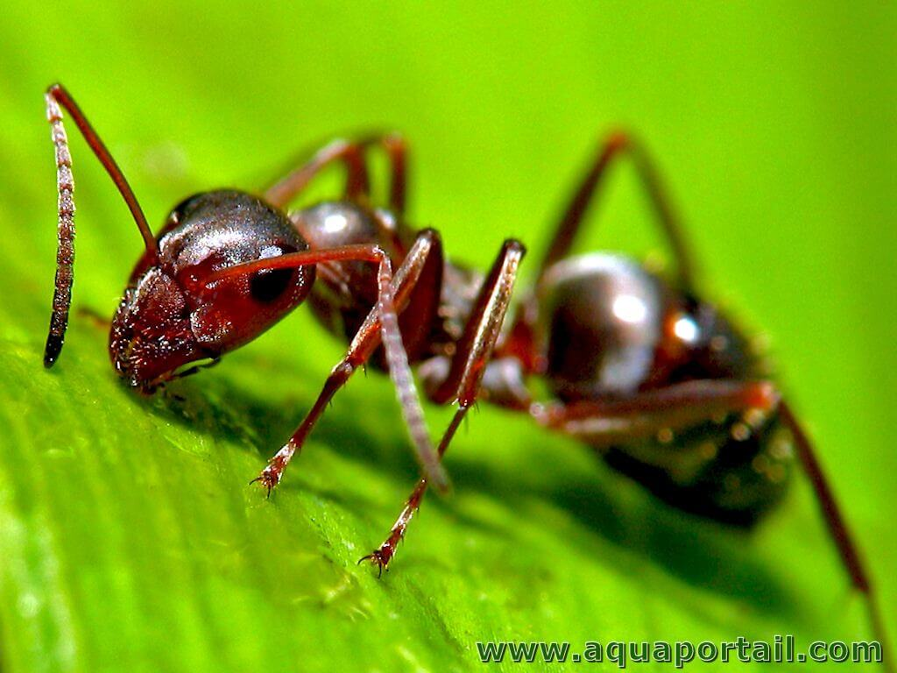

En tant que plus grand et l’un des déserts les plus secs de la planète, il est sûr de dire qu’il y a très peu d’endroits au monde comme le désert du Sahara. La mer infinie de dunes de sable, toutes dans différentes nuances d’or, est le cadre idéal pour vivre une escapade unique dans une vie remplie d’aventures, de divertissements et d’expériences uniques. La plupart des gens veulent visiter le désert du Sahara et l’explorer sur le dos d’un chameau. Bien que ce soit certainement une aventure passionnante à vivre, il y a beaucoup plus de choses que vous pouvez faire dans le désert .Le désert du Sahara offre une multitude de destinations fascinantes à visiter, chacune avec ses propres caractéristiques uniques. Voici quelques-uns des endroits à découvrir dans le Sahara
Le désert n'est pas là où l'on croit. Le Sahara est plus vivant qu'une capitale et la ville la plus grouillante se vide si les pôles essentiels de la vie sont désaimantés. J'ai toujours aimé le désert
Si vous faites une randonnée dans les déserts, monter au dos de chameau est en quelque sorte une tradition pour les visiteurs et les touristes. Dompter ces majestueuses bêtes avec un style oriental et effectuer quelque balade à travers le désert peut paraitre anodin et rustique, mais c’est très amusant. Optez pour un hôtel Ouarzazate qui propose des activités dans leurs forfaits vacances pour profiter pleinement de votre balade en chameau.
Au même titre que monter un chameau ou un dromadaire, faire du quad dans le désert de Sahara est vraiment très plaisant. Louez votre propre quad et réservez un voyage d’une ou deux heures avec un guide pour explorer les dunes de sable. Les activités peuvent inclure la visite de villages locaux, la découverte de palmeraies ou tout simplement de profiter du paysage doré qui passe devant vous pendant que vous explorez le désert du Sahara sur quatre roues.
Toujours dans le thème nocturne, l’une des choses à faire dans le désert est de faire un feu de camp. Cela peut paraitre surprenant, mais il y a en fait beaucoup de bois mort et de buissons secs à ramasser dans le Sahara. Et c’est tout ce dont vous aurez besoin pour allumer votre feu rapidement. Les nuits d’hiver, lorsque les températures chutent considérablement la nuit, ce sera la meilleure façon de rester au chaud.
Les oasis sont des zones fertiles et verdoyantes situées au cœur des déserts, caractérisées par la présence d'eau souterraine ou de sources naturelles. Elles servent souvent de refuges pour les voyageurs et les populations locales dans des environnements arides. Les oasis sont généralement entourées de palmiers et d'autres végétations luxuriantes, et abritent souvent des villes ou des villages traditionnels. Elles sont importantes pour l'agriculture et la vie communautaire dans les régions désertiques et offrent un contraste saisissant avec les paysages arides environnants.


Même si vous n'avez pas envie de manger pendant la journée, lorsque les températures baissent fortement la nuit votre corps commencera à avoir besoin de calories pour vous garder au chaud, alors ne sous-estimez pas l'importance d'emballer des aliments hautement nutritifs, collations énergétiques. Le camping dans le désert sauvage peut être écrasant, mais si vous avez accès à quelques ustensiles de cuisine de base, comme une marmite de camping et un réchaud portable, alors vous pouvez facilement vous donner accès à une alimentation saine, alimentation équilibrée même dans les environnements désertiques les plus rudes. Assurez-vous d'apporter avec vous un mélange d'aliments en conserve et secs, mais essayez d'opter pour des alternatives à faible teneur en sodium car une forte concentration de sel dans votre corps peut provoquer et aggraver la déshydratation
Comme pour l'ensemble des vêtements à emporter dans le désert du Sahara, vous devez vous concentrer sur des vêtements proposés vu la chaleur écrasante et le soleil ardent, s'habiller adéquatement est essentiel pour affronter les conditions extrêmes. Les vêtements légers et amples en tissus respirants comme le coton aident à évacuer la transpiration tout en offrant une protection contre le soleil brûlant. Un chapeau à larges bords et des lunettes de soleil sont indispensables pour se protéger des rayons UV et du sable soufflé par le vent. Les couleurs claires sont préférables car elles réfléchissent la chaleur, tandis que des vêtements chauds sont nécessaires pour les nuits fraîches. En suivant ces conseils, les voyageurs peuvent rester à l'aise et protégés dans les vastes étendues du désert.
 

 

Le renard du désert ou renard fennec est la plus petite espèce de canidé avec des oreilles inhabituellement grandes qui aident à dissiper la chaleur. Son corps est bien adapté à l’habitat aride, et on le trouve du Maroc à l’Égypte ainsi que vers le sud jusqu’au nord du Niger et à l’est jusqu’au Koweït et la péninsule du Sinaï. Il se nourrit d’oiseaux, d’insectes et de rongeurs. Sa couleur sable le camoufle bien dans le désert, ce qui le rend difficile à détecter. Il faudra avoir l’œil.
Du côté de nos amis à plume, le désert du Sahara compte également de nombreuses espèces. Parmi elles, il y a l’autruche à collier rouge ou l’autruche d’Afrique du Nord. Certes, il s’agit sans aucun doute du plus grand oiseau du monde. Il peut atteindre jusqu’à environ 2,5 mètres de long avec un cou rouge rosâtre, un plumage noir et blanc chez les mâles et un plumage gris chez les femelles. Malheureusement, la population de cette espèce a fortement diminué en raison de la chasse et le manque de nourriture.
Un animal unique, la fourmi argentée du Sahara où Cataglyphis bombycina, ne reste actif que 10 minutes par jour. Ces créatures ont des pattes plus longues que les autres fourmis et produisent des protéines de choc thermique avant de sortir de leurs terriers. Ces deux adaptations les aident à survivre à la chaleur extrême du désert. Cette fourmi est une espèce endémique qui ne vit que dans le désert de Sahara.
 



Le Sahara offre une multitude de souvenirs captivants qui reflètent la richesse culturelle et la beauté naturelle de la région. Des artisanats traditionnels comme les tapis berbères et les poteries aux précieuses pierres et minéraux, en passant par les bouteilles de sable coloré et les textiles authentiques, chaque souvenir raconte une histoire unique du désert. Les photographies des paysages époustouflants et des couchers de soleil inoubliables capturent l'essence même de cette terre vaste et mystérieuse. Quels que soient vos choix, ces souvenirs du Sahara seront des rappels précieux de votre voyage à travers ce désert majestueux.